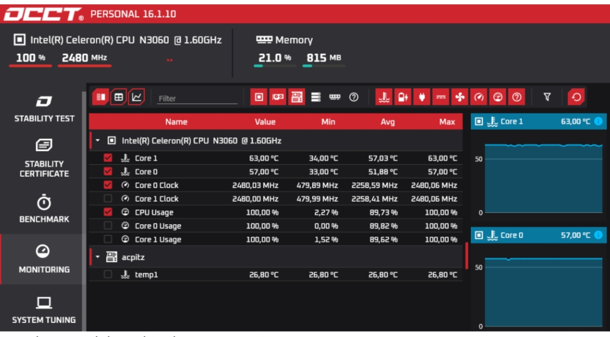

Foto de la auditoría y del cambio de pasta térmica
(guardá la imagen como img/caso1.jpg)
(guardá la imagen como img/caso1.jpg)

Auditoría con OCCT y cambio de pasta térmica
Evalué el estado de un equipo con la herramienta OCCT, realicé el desmontaje, la limpieza interna y el reemplazo de la pasta térmica.
- Prueba de estabilidad y temperaturas con OCCT.
- Desmontaje, limpieza de componentes y reemplazo de pasta térmica.
- Registro fotográfico del procedimiento.